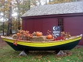
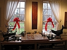
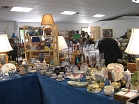

Ghostly Tours:
Annually the Ogunquit Chamber of Commerce sponsors a fall themed
weekend called OgunquitFest. On Saturday of that weekend the Museum
conducts an evening open house. Visitors are escorted on a walk through
the town and told tales of the spirits and ghosts which occupy
Ogunquit. The price of admission is $5 for adults and children are
admitted free. Information about dates and times can be located at
www.ogunquit.org
Christmas by the Sea Open House: Annually the Ogunquit Chamber of Commerce sponsors a themed weekend complete with caroling, shopping and a parade. On Saturday and Sunday afternoons, the Museum is decorated for the season and refreshments are provided by our committees. It is a chance to meet old friends, share memories and view our exhibits from the previous summer. Check for exact times of all events at www.ogunquit.org and join us for Christmas cheer!
Annual Antiques Show: Our major fundraising event is the Autumn Antiques Show which is produced by the Friends of the Ogunquit Heritage Museum. This takes place the second weekend of September on Saturday 10–5 p.m. and on Sunday 10–4 p.m. It is at the S. Judson Dunaway Center at 23 School Street in Ogunquit and features many dealers from around New England. The price of admission is $5. You may call 207–646–0296 for additional details.

Christmas by the Sea Open House: Annually the Ogunquit Chamber of Commerce sponsors a themed weekend complete with caroling, shopping and a parade. On Saturday and Sunday afternoons, the Museum is decorated for the season and refreshments are provided by our committees. It is a chance to meet old friends, share memories and view our exhibits from the previous summer. Check for exact times of all events at www.ogunquit.org and join us for Christmas cheer!

Annual Antiques Show: Our major fundraising event is the Autumn Antiques Show which is produced by the Friends of the Ogunquit Heritage Museum. This takes place the second weekend of September on Saturday 10–5 p.m. and on Sunday 10–4 p.m. It is at the S. Judson Dunaway Center at 23 School Street in Ogunquit and features many dealers from around New England. The price of admission is $5. You may call 207–646–0296 for additional details.
